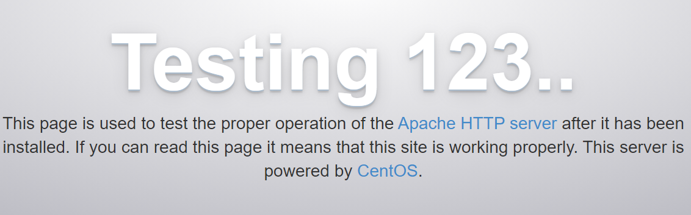
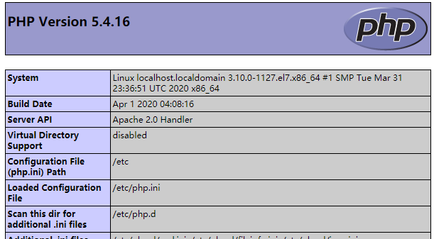

0.centOS自动获取ip
修改这个以下文件就行
1 | vi /etc/sysconfig/network-scripts/ifcfg-ens33 |
把ONBOOT=NO 改为YES
再重启服务
1 | service network restart |
1.安装配置apache
安装
1 | yum install httpd -y |
启动
1 | systemctl start httpd |
查看配置
1 | httpd -S //显示当前虚拟主机的 HTTP 配置 |
打开80端口
1 | firewall-cmd --zone=public --add-service=http --permanent |
查看本机端口开放情况
1 | netstat -lpnut |
这时候访问以下localhost或者ip地址应该会出现Apache默认页面
Testing123…

2.安装PHP
安装
1 | yum -y install php |
重启Apache服务
1 | systemctl restart httpd |
然后在 /var/www/html/下新建一个info.php
1 | <?php phpinfo();?> |
访问 http://xxxxxxxxx/info.php
出现了熟悉的phpinfo，成了

3.安装mysql
MySQL在CentOS 7里是Mariadb。
安装
1 | yum -y install mariadb* |
同样的，设置为开机自动
1 | systemctl start mariadb.service |
设置root账户密码
1 | mysql_secure_installation |
跟着提示自己做
可以用 mysql -u root -p 验证一下
4.安装php-mysql
1 | yum -y install php-mysql |
5.安装常用PHP模块和组件
1 | yum -y install php-gd php-ldap php-odbc php-pear php-xml php-xmlrpc php-mbstring php-snmp php-soap curl curl-devel |
或
1 | yum install php-mysql php-gd libjpeg* php-ldap php-odbc php-pear php-xml php-xmlrpc php-mbstring php-bcmath php-mhash |